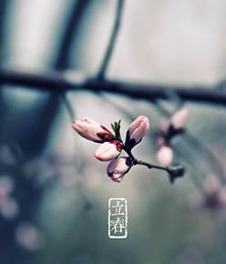
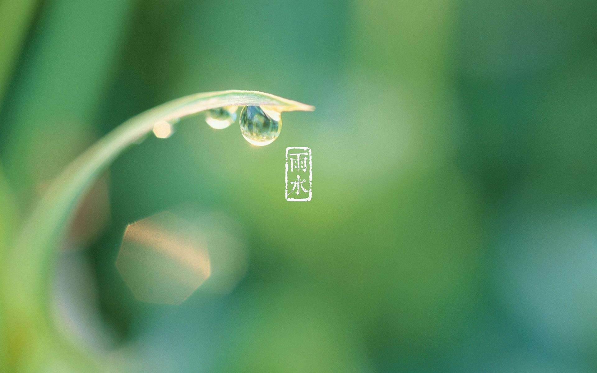
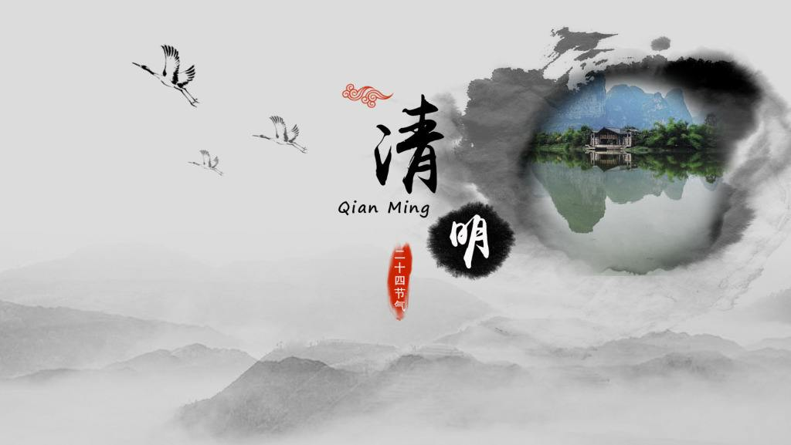

立春，阳历二十四节气中的第一个节气。立春是从天文上来划分的，即太阳到达黄经315°时。
立春是中国民间重要的传统节日之一。"立"是"开始"的意思，自秦代以来，中国就一直以立春作为孟春时节的开始。所谓"一年之计在于春"，春是温暖，鸟语花香；春是生长，耕耘播种。
立春之日迎春已有三千多年以上历史，中国自官方到民间都极为重视。立春时，天子亲率三公九卿、诸侯大夫去东郊迎春，祈求丰收。回来之后，要赏赐群臣，布德令以施惠兆民。这种活动影响到庶民，使之成为后来世世代代的全民的迎春活动 。

雨水是24节气中的第2个节气。每年的正月十五前后（公历2月18-20日），太阳黄经达330度时，是二十四节气的雨水。此时，气温回升、冰雪融化、降水增多，故取名为雨水。雨水节气时段一般从公历2月18日或19日开始，到3月4日或5日结束。雨水和谷雨、小雪、大雪一样，都是反映降水现象的节气。
惊蛰，古称"启蛰"，是二十四节气中的第三个节气，标志着仲春时节的开始；太阳到达黄经345°时。《月令七十二候集解》："二月节……万物出乎震，震为雷，故曰惊蛰，是蛰虫惊而出走矣。"
此前，动物入冬藏伏土中，不饮不食，称为"蛰"；到了"惊蛰节"，天上的春雷惊醒蛰居的动物，称为"惊"。故惊蛰时，蛰虫惊醒，天气转暖，渐有春雷，中国大部分地区进入春耕季节。古代分惊蛰为三候："一候桃始华；二候仓庚（黄鹂）鸣；三候鹰化为鸠。"惊蛰三候所代表的花信为："一候桃花，二候杏花，三候蔷薇。
春分，是春季九十天的中分点。二十四节气之一，每年公历大约为3月20日左右，太阳位于黄经0°（春分点）时。春分这一天太阳直射地球赤道，南北半球季节相反，北半球是春分，在南半球来说就是秋分。春分是伊朗、土耳其、阿富汗、乌兹别克斯坦等国的新年，有着3000年的历史

清明节，又叫踏青节，在仲春与暮春之交。清明节是中国传统节日，也是最重要的祭祀节日之一，是扫墓祭祖的日子。中华民族传统的清明节大约始于周代，距今已有二千五百多年的历史。经历史的发展演变，清明具有极为丰富的内涵，各地都发展出了不同习俗，而扫墓祭祖、踏青郊游是基本主题
谷雨是二十四节气的第六个节气，也是春季最后一个节气，每年4月19日～21日时太阳到达黄经30°时为谷雨，源自古人"雨生百谷"之说。同时也是播种移苗、埯瓜点豆的最佳时节。
"清明断雪，谷雨断霜"，气象专家表示，谷雨是春季最后一个节气，谷雨节气的到来意味着寒潮天气基本结束，气温回升加快，大大有利于谷类农作物的生长。